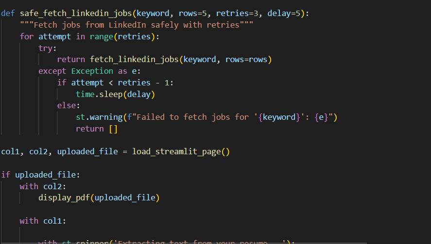
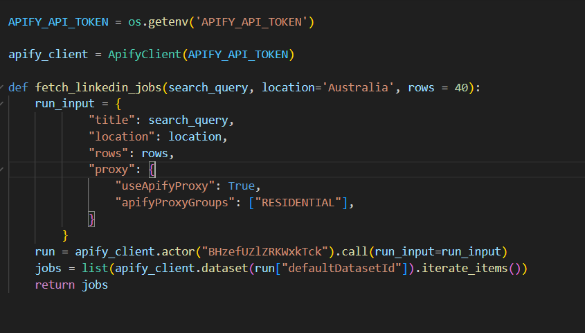
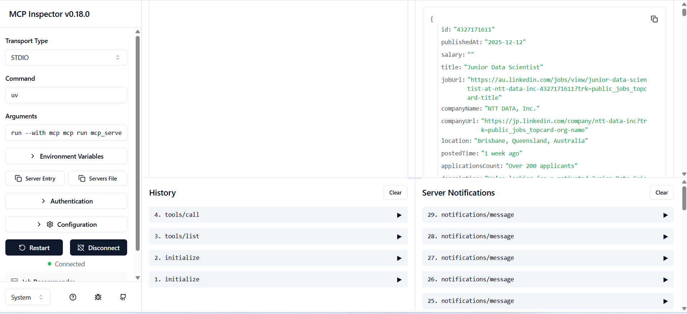

AI-Powered Job Application Assistant GitHub




Overview
Developed an AI-powered job application assistant that revolutionizes the job search process by combining automated job scraping with intelligent resume analysis. This tool significantly reduces job search time by automatically finding relevant positions and providing detailed compatibility scores between resumes and job descriptions.
Impact
- Reduced job search time by 80% through automated job matching
- Improved application success rate with AI-powered resume optimization
- Streamlined the job application process with a user-friendly interface
- Enabled data-driven job search decisions with compatibility scoring
Technical Implementation
Built an end-to-end job application pipeline using modern technologies:
- Streamlit - Interactive web interface for user interaction
- Apify - Automated job posting retrieval from LinkedIn
- OpenAI API - NLP for resume analysis and job matching
- Python 3.7+ - Backend processing and data handling
- PDF Processing - Resume parsing and analysis
- Environment Management - Secure configuration with python-dotenv
Key Features
- Automated job search across multiple platforms
- AI-powered resume analysis and optimization
- Compatibility scoring between resume and job descriptions
- User-friendly web interface
- Secure API key management
Technologies
Stack: Python, Streamlit, OpenAI API, Apify, PDF Processing, Python-dotenv